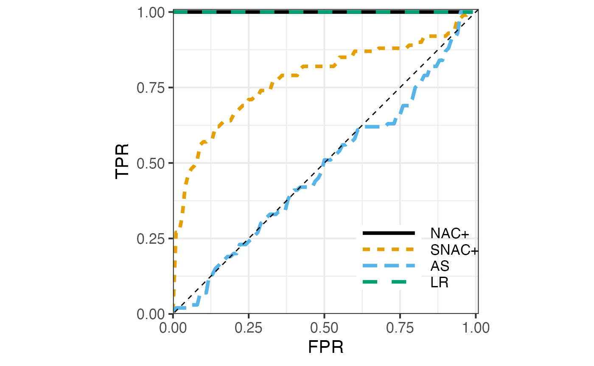

hard_dcsbm_testing.RmdWe consider the testing problem introduced in Jin, Ke, and Luo (2019) where one tests a DCSBM with \(K=1\) communities (model 1) and a DCSBM with \(K \ge 2\) communities (model 2), both having the same expected degree for every node. Model 1 can be considered the degree-corrected Erdős–Rényi model.
We mostly follow the notation of Jin, Ke, and Luo (2019) with some minor deviations (e.g., we use \(\lambda\) to denote the expected average degree of the network). They consider the degree-corrected mixed membership model (DCMM) with the following expectation for the adjacency matrix \[\begin{align*} \mathop{\mathrm{\mathbb E}}[A_{ij} \mid \theta, \pi] = \theta_i \theta_j \,\pi_i^T P \pi_j, \quad i <j, \quad \pi_i \sim F \end{align*}\] where \(\pi_i\) is a random element of \([0,1]^K\). In the special case of the DCSBM, we have \(\pi_i = e_{z_i}\) where \(z_i\) is a random label in \([K]\) and \(e_k\) is the \(k\)th basis vector of \(\mathbb R^K\). This special case is what we consider here. For identifibaility, it is assumed that \(\|P \|_\infty = \max_{k\ell} |P_{k\ell}|= 1\). They also let \[h = \mathop{\mathrm{\mathbb E}}[\pi_i]\] denote the class prior.
For model 1, we have a DCSBM with \(K=1\) and node connection propensity parameter \(\theta_i\), that is, \[ \mathop{\mathrm{\mathbb E}}[A_{ij} \mid \theta] = \theta_i \theta_j, \quad i < j. \] Let us denote the degree of node \(i\) as \(\mathop{\mathrm{deg}}(i)\). Under model 1 is \[\mathop{\mathrm{\mathbb E}}[\mathop{\mathrm{deg}}(i)] = \theta_i \sum_{j \neq i} \theta_j = \theta_i (\|\theta\|_1 - \theta_i) .\]
For model 2, Jin, Ke, and Luo (2019) propose to use random propensity parameters \(\widetilde \theta= (\widetilde \theta_j)\), with \[ \widetilde \theta_i = d_{z_i} \theta_i \] where \(\{d_k, k \in [K]\}\) is to be determined. For model 2, we have \(\mathop{\mathrm{\mathbb E}}[A_{ij} \mid \widetilde \theta, z] = \widetilde \theta_i \widetilde \theta_j \,e_{z_i}^T P e_{z_j}\) for \(i < j\). The expected degree of node \(i\) under model 2 is \[ \mathop{\mathrm{\mathbb E}}[\mathop{\mathrm{deg}}(i)] = \sum_{j\ne i}\mathop{\mathrm{\mathbb E}}[A_{ij}] = \mathop{\mathrm{\mathbb E}}[\widetilde \theta_i e_{z_i}^T]\, \sum_{j\neq i} P \mathop{\mathrm{\mathbb E}}[\widetilde \theta_j e_{z_j}] \] using implicit independence assumptions. We have \[ \mathop{\mathrm{\mathbb E}}[\widetilde \theta_i e_{z_i}] = \mathop{\mathrm{\mathbb E}}[ d_{z_i} \theta_i e_{z_i}] = \theta_i \mathop{\mathrm{\mathbb E}}[d_{z_i} e_{z_i}] = \theta_i \sum_k h_k d_k e_k = \theta_i D h \] where \(D = \mathop{\mathrm{diag}}(d_k)\). Plugging-in we have, under model 2, \[ \mathop{\mathrm{\mathbb E}}[\mathop{\mathrm{deg}}(i)] = \theta_i \Big(\sum_{j \neq i} \theta_j \Big) h^T D P D h. \] Since \(h^T 1_K = 1_K\), if we choose \(D\) such that \(D P D h = 1_K\), then model 2 will have the same expected degree for each node as model 1.
Since \(P\) is symmetric and has nonnegative entries, under mild conditions on \(P\) and \(h\), the symmetric version of Sinkhorn theorem guarantees the existence of a diagonal matrix \(D = \mathop{\mathrm{diag}}(d_k)\) with positive entries such that \(D P D 1_K = h\) that is, \(D P D\) has row sums \(h\). See Idel (2016) for a review.
Let us use the elementwise notation \(h / d\) and \(h d\) to denote the vectors with entries \(h_k / d_k\) and \(h_k d_k\). The Sinkhorn equation can be written as \[
P d = h / d
\] or equivalently as the fixed point equation \(d = h / Pd\) which can be solved by repeated application of the operator \(d \mapsto h/Pd\) to an initial vector, say, \(1_K\). The iteration in fact oscillates between the the two solutions \(d_1\) and \(d_2\) of the nonsymmetric Sinkhorn equation \(P d_2 = h/ d_1\) (Knight 2008; Bradley 2010) and can be made to converge by averaging every two steps. This is implemented in sinkhorn_knopp function in the nett package.
To get the version we need, that is, \(D P D h = 1_K\), let us write Sinkhorn equation with \(d\) renamed to \(r\). Then, \[ P r = h / r \iff P ((r/h) h) = \frac{1_K}{r/h} \] This shows that defining \(d = r/h\), that is, \(d_k = r_k / h_k\) and letting \(D = \mathop{\mathrm{diag}}(d_k)\) we have the desired scaling \(D P D h = 1_K\). That is, we solve the symmetric Sinkhorn problem with row sum data \(h\), and rescale the output \(r\) to \(r/h\) to get the desired \(d\) for our problem.
Let us verify these ideas:
Ktru = 4 # number of true communities oir = 0.15 # out-in-ratio h = 1:Ktru h = h / sum(h) # class prior or `pri` in our notation P_diag = rep(1, Ktru) P = oir + diag(P_diag - oir) r = nett::sinkhorn_knopp(P, sums=h, sym=T)$r d = r / h diag(d) %*% P %*% diag(d) %*% h # verify Sinkhorn's scaling #> [,1] #> [1,] 1 #> [2,] 1 #> [3,] 1 #> [4,] 1
The expected average degree of model 1 is \(\alpha^2 := \frac1n(\|\theta\|_1^2 - \|\theta\|_2^2)\). We can rescale \(\theta\) to \(\sqrt{\lambda} \theta / \alpha\) to get a desired expected average degree \(\lambda\):
n = 2000 # number of nodes lambda = 5 # expected average degree # Generate from the degree-corrected Erdős–Rényi model set.seed(1234) theta <- EnvStats::rpareto(n, 2/3, 3) alpha2 = (sum(theta)^2 - sum(theta^2))/n theta = theta * sqrt(lambda/alpha2) A = nett::sample_dcer(theta) # sample the adjacency matrix matrix mean(Matrix::rowSums(A)) #> [1] 4.931 hist(Matrix::rowSums(A), 15, main = "Degree distribution", xlab = "degree")
z = sample(Ktru, n, replace=T, prob=h) # randomly smaple "true community labels" tht = d[z] * theta A = nett::sample_dcsbm(z, P, tht) # sample the adjacency matrix hist(Matrix::rowSums(A), 15, main = "Degree distribution", xlab = "degree")
nrep = 10 degs1 = degs2 = rep(0, n) for (r in 1:nrep) { degs1 = degs1 + Matrix::rowSums(nett::sample_dcer(theta)) z = sample(Ktru, n, replace=T, prob=h) # randomly smaple "true community labels" degs2 = degs2 + Matrix::rowSums(nett::sample_dcsbm(z, P, d[z] * theta)) } degs1 = degs1 / nrep degs2 = degs2 / nrep # cbind(degs1, degs2) mean(abs(degs1 - degs2)/(degs1 + degs2)/2) #> [1] 0.04304521
Let us now see how the NAC tests perform for separating these two models. We also compare with the likelihood ratio (LR) and adjusted spectral (AS) tests. Let us define the methods
K_H0 = 1 K_H1 = Ktru apply_methods = function(A) { z0 = nett::spec_clust(A, K_H0) z0p = nett::spec_clust(A, K_H0+1) z1 = nett::spec_clust(A, K_H1) tibble::tribble( ~method, ~tstat, ~twosided, "NAC+", nett::nac_test(A, K_H0, z=z0, y=z0p)$stat, F, "SNAC+", nett::snac_test(A, K_H0, z=z0)$stat, F, "AS", nett::adj_spec_test(A, K_H0, z=z0), F, "LR", nett::eval_dcsbm_loglr(A, cbind(z0, z1), poi=T), F ) }
as well as the data generation functions for the null and alternative hypotheses:
gen_null_data = function() { nett::sample_dcer(theta) } gen_alt_data = function() { z = sample(Ktru, n, replace=T, prob=h) nett::sample_dcsbm(z, P, d[z] * theta) }
We can now simulate the ROC:
# try reducing nruns for faster bu cruder estimation of the ROC curves roc_res = nett::simulate_roc(apply_methods, gen_null_data = gen_null_data, gen_alt_data = gen_alt_data, nruns = 100, core_count = 3) nett::printf('time = %3.3f', roc_res$elapsed_time) #> time = 23.323
Here are the resulting ROCs:
plot_res <- roc_res$roc plot_res$method <- factor(plot_res$method, levels = c("NAC+","SNAC+","AS", "LR")) nett::plot_roc(plot_res)

The setup we have considered is quite difficult with oir = \(0.15\) and \(\lambda = 5\). You can try to change oir and \(\lambda\) rerun this experiment. They following is observed:
Comments
Theorem 3.2 of Jin, Ke, and Luo (2019) states that under the condition that \(\|\theta\|_\infty \lesssim 1\) and \(\min_k h_k \gtrsim 1\) if \[\|\theta\|\cdot |\mu_2(P)| \to 0, \] the two hypotheses are indistinguisiable (in the sense that their \(\chi^2\)-distance goes to zero). Here \(\mu_2(P)\) is the 2nd largest eigenvalue of \(P\) in magnitude. In our seteup, \(\mu_2(P) \asymp 1\). So the condition is essentially \(\|\theta\| \to 0\).
Note that the expected average degree of the null model is \[\lambda \sim \frac{\|\theta\|_1^2}{n}.\] We have \(\|\theta\|_2 \ge \frac{\|\theta\|_1}{\sqrt n}\), hence, in the wrost case \(\|\theta\|_2 = \frac{\|\theta\|_1}{\sqrt n} \asymp \sqrt{\lambda}\) and the condition is equivalent to \(\sqrt{\lambda} \to 0\), that is, the expected average degree \(\lambda\) vanishes asympototically. It is quite reasolable that most methods would fail when \(\lambda \to 0\).
In all other cases, the situation is better. In particular, the above experiment shows that even for a sufficiently small \(\lambda = 5\) and a fairly large \(n = 2000\), NAC tests can still be perfect for this problem.